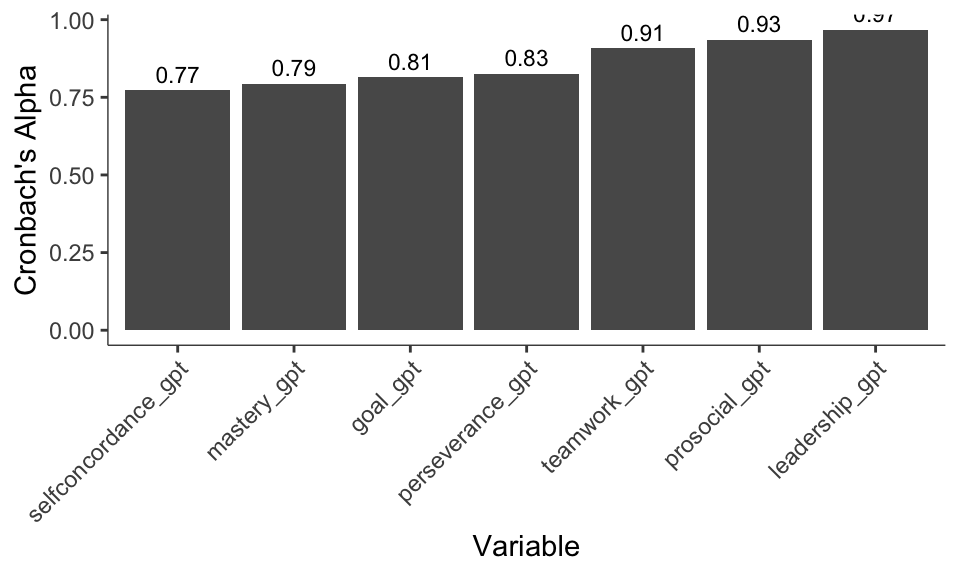
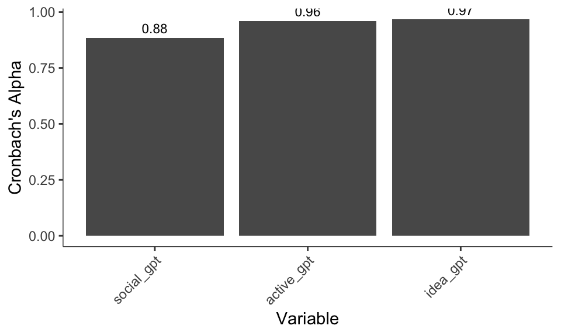
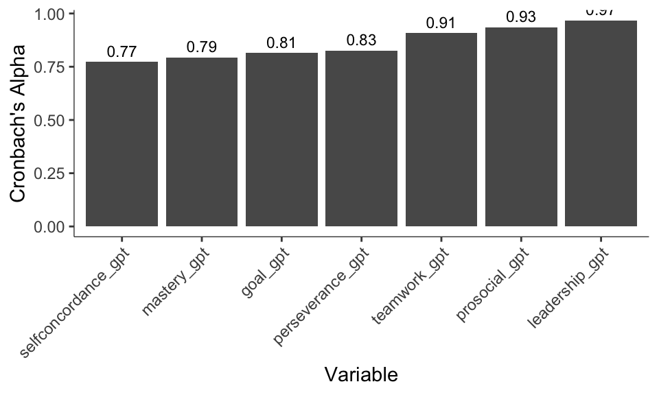
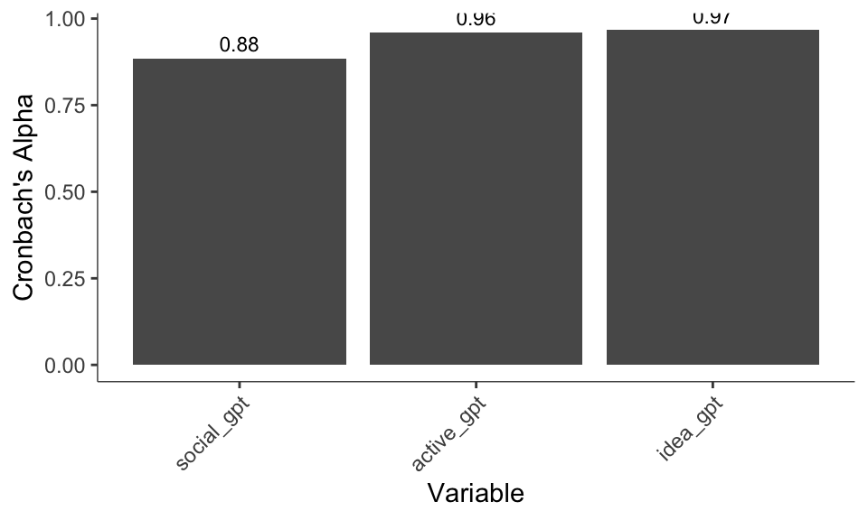
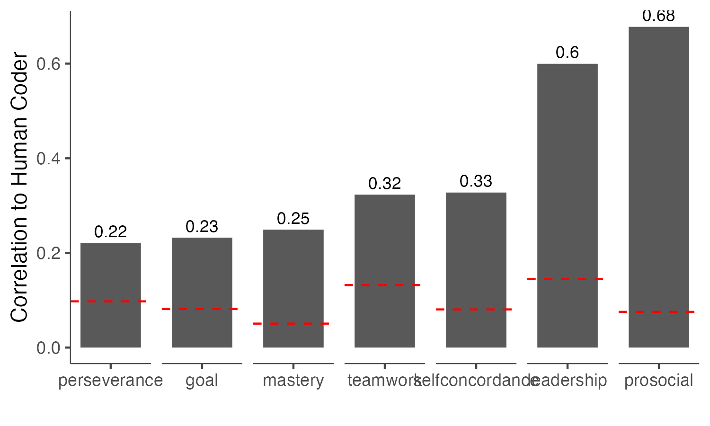
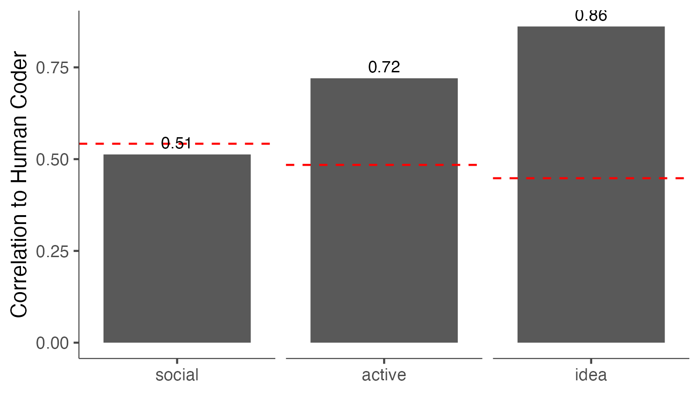
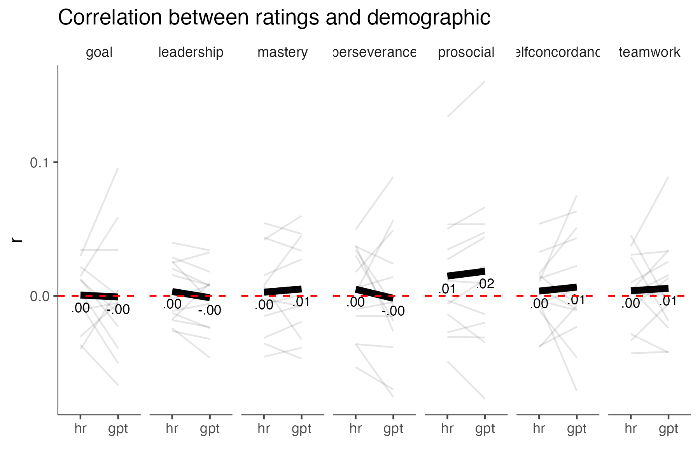
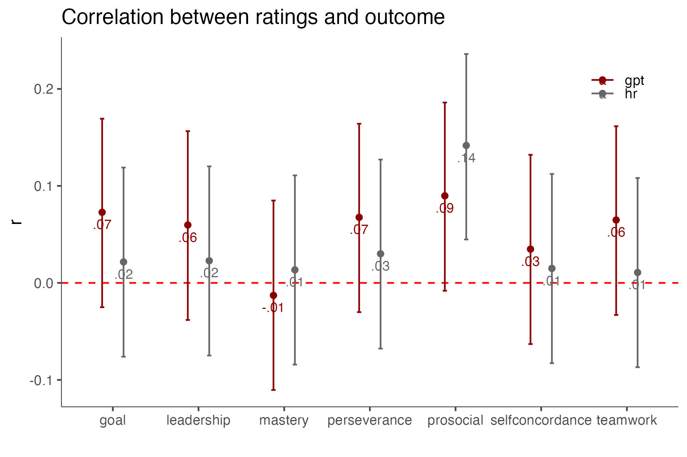
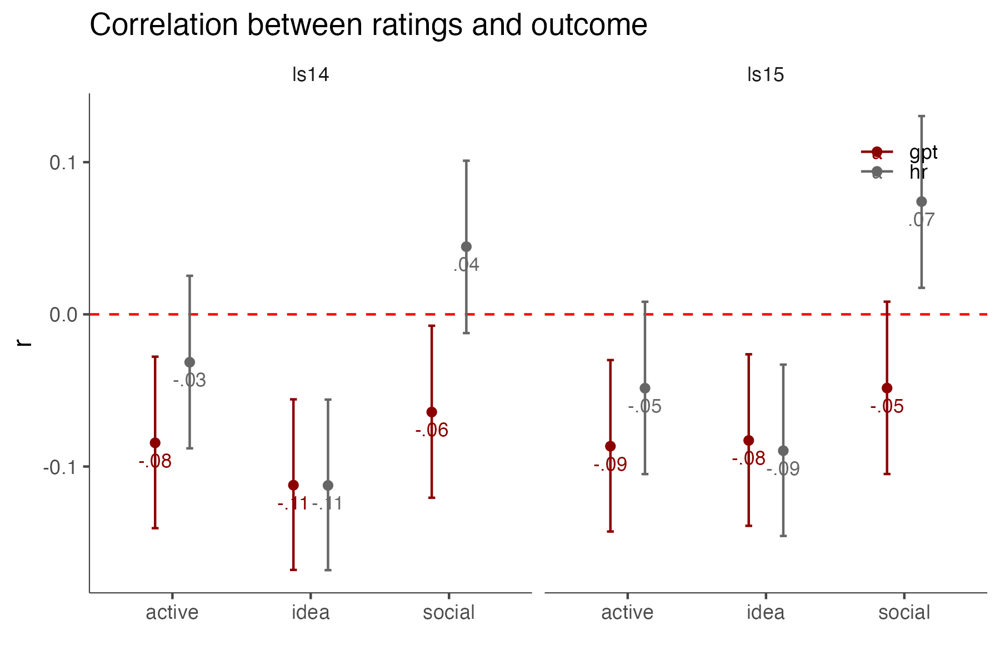

Social science as an enterprise depends on the quality of its methods. One key methodological approach in the field involves human rating or coding of open-ended text, which has been instrumental in generating insights in landmark research. For instance… Despite its usefulness, human coding can be prohibitive in terms of training, reliability, and time required for analysis.
Recently, advances in natural language processing (NLP) have provided ways to automate these processes, offering a more efficient alternative to human coding. Traditionally, NLP techniques have been employed to fine-tune models for classification tasks, such as detecting perseverance in admissions essays or predicting user satisfaction from customer reviews. However, these methods require expertise, human labels for initial training, and substantial computational resources.
The advent of zero-shot learning in large language models (LLMs) like GPT-4 promises to address these challenges by eliminating the need for pretraining and human labeling. By leveraging the vast knowledge already embedded in these models, researchers can potentially deploy LLMs for various classification tasks without incurring the costs associated with traditional fine-tuning processes.
During our preparation of this work, there have been reports suggesting that LLMs outperform human annotators without fine-tuning (i.e., zero-shot learning). However, these studies present three limitations: (1) They compare LLMs to Mechanical Turk workers, rather than trained raters, setting a lower bar for performance. (2) The majority of these studies focus on sentiment analysis, which is a relatively simple task for which there are already a number of validated dictionaries (e.g., LIWC) or transformer models. More complex constructshave a far more sparse landscape in terms of available measures. (3) There is no evidence on how LLMs perform with respect to demographic variables, which is a major concern in social science research. Demographic bias and social biases are known to be embedded within LLMs, raising questions about whether LLMs based rating would introduce demographic bias.
However, if chatbots have the ability to match the validity of human ratings without bias, absent human labels and pretraining, this might significantly accelerate the pace of scientific investigation. In this study, we test whether LLMs are ready for this leap. We collected several social science datasets where human ratings across a range of social science constructs—such as political ideology, moral values, and cognitive style—were used to predict meaningful outcomes. We re-ran these studies replacing the original human ratings with LLM ratings. We then evaluated how well the LLM ratings matched the human ratings, whether they introduced demographic bias, and whether they predicted outcomes as well as the human ratings. By employing a diverse and representative sample of textual data encompassing several disciplines and constructs, that were rated by trained coders rather than MTurkers, and examining the demographic impact of replacing human raters, we hope to provide a more comprehensive assessment of the potential of LLMs for social science research.
ChatGPT ratings are already quite reliable when using default parameters (temperature = 1). See ?@fig-alphas for Cronbach’s alpha coefficients.


LLM coding correlates with human coding ChatGPT codes correlate somewhat weakly to some of the human codes. However, all correlations are positive, in the expected direction, and greater than discriminant correlations.





We show that fully or partially automated methods can challenge the importance of human coding in the social sciences. They can produce scores more reliable than human raters, at lower cost, and almost instantaneously, without the need for extra finetuning and human labelling. Coding data with LLMs does not introduce demographic biases, and codes retain their predictive accuracy. Finally, across constructs, it seems that more abstract coding is a harder problem for LLMs.
Contributions The time and money savings are massive. In less than an hour, ChatGPT read 3 thousand essays, and did so for around 10 dollars. ChatGPT looks not so great if you assume that human raters are noiseless and unbiased. This is a bold assumption, that when relaxed makes chatGPT look so much better.
Limitations It is hard to know whether results generalize to other kinds of constructs, elicitation procedures, and rating schemes.
Future directions Adaptive measurement
The fact that LLMs are not always open-source, means that if they were to stop being supported, research might fail to be reproducible in the long run. The inherent noise in LLMs also makes it difficult to use them for reproducibility (i.e., another researcher might get different ratings when trying to replicate findings).
Implications
Text completion engines have noise built into them, so their output is not deterministic. This makes it so that the ratings do not have perfect reliability. However, if they are unbiased, noise can be averaged out through aggregation.
Another relevant point is where coded constructs lie in the concrete-abstract dimension. It is likely that LLMs will perform better for more concrete constructs (e.g., altruism) vs more abstract ones (e.g., intrinsic motivation).